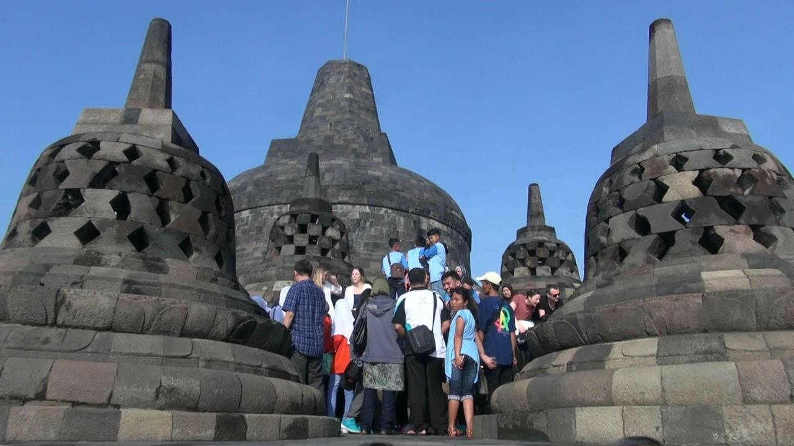
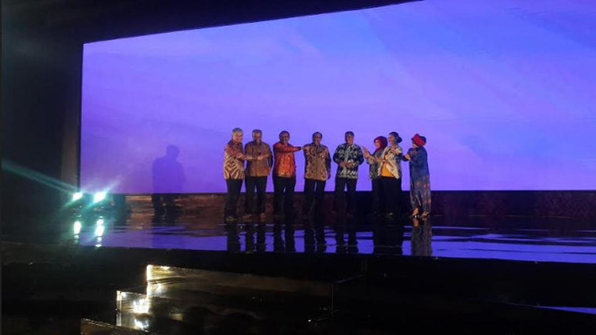

Diposting Oleh Merdeka.com, Agustina Melani

Liputan6.com, Jakarta - The World Travel & Tourism Council (WTTC) kini memasukkan Indonesia ditempatkan dalam 10 besar dunia. Tepatnya peringkat 9. Padahal sebelumnya hampir tidak terdengar prestasinya.
WTTC adalah sebuah institusi yang menaungi industri travel dan pariwisata dunia. Kantor pusat WTTC berada di London, Inggris. Menurut Direktur Eksekutif WTTC Gloria Guevara, Hari Pariwisata Dunia dirayakan secara global. Karena, sektor pariwisata menyumbang 10,4 persen dari pertumbuhan dunia.
"Laporan terbaru WTTC mengenai ranking kekuatan dan performa pariwisata ini, memperlihatkan negara yang paling sukses meningkatkan sektor pariwisata," papar Gloria Guevara, dikutip dari www.breakingtravelnews.com, seperti ditulis Sabtu (6/10/2018).
Penilaian dilakukan berdasarkan perkembangan kepariwisataan selama beberapa tahun belakangan. Dalam daftar yang dikeluarkan, Indonesia menempati peringkat ke-9. Sedangkan RRC dan Amerika Serikat menempati posisi teratas, posisi ini terbaik di antara negara-negara lainnya.
Seperti Thailand yang berada di peringkat 12, Filipina dan Malaysia di peringkat 13, dan Singapura di peringkat 16, serta Vietnam di posisi 21. Guevara mengakui negara-negara yang tergabung dalam G20 mendominasi daftar ini.
"Memang negara-negara G20 mendominasi. Mereka menempati 12 negara di top 20. Kelebihan negara G20 adalah mereka menempatkan sektor pariwisata sama pentingnya dengan pasar dan pertumbuhan ekonomi global," ujar Guevara. (hhw)
========================================2 dari 2 Halaman======================================

Sebelumnya, Kementerian Pariwisata (Kemenpar) menargetkan sebanyak 20 juta kunjungan wisatawan mancanegara (wisman) pada 2019.
Itu dikemukakan dalam Rapat Koordinasi Nasional (Rakornas) Pariwisata III 2018 di Hotel Raffles, Jakarta Selatan, Rabu 26 September 2018.
Untuk mendukung target 20 juta wisman, Menteri Pariwisata Arief Yahya mengatakan, Presiden Joko Widodo (Jokowi) telah menetapkan 10 destinasi pariwisata prioritas sebagai Bali baru. Hal ini diputuskan untuk menggenjot investasi pada sektor pariwisata RI.
"Di 2019 - 2024, dibutuhkan investasi sektor pariwisata 120.000 hotel rooms, 15.000 restoran, 100 taman rekreasi, 100 operator diving, 100 marina, dan 100 Kawasan Ekonomi Khusus (KEK) dengan melibatkan dunia usaha, program pembangunan 100.000 homestay yang meliputi usaha kecil menengah (UKM) pariwisata," ujar dia di Hotel Raffles.
"Jadi besarnya kebutuhan investasi dan pembiayaan di sektor pariwisata ini kita coba petakan dan bahas dalam Rakornas Pariwisata III/2018," tambah dia.
Arief melanjutkan, hingga 2019, sektor pariwisata membutuhkan investasi dan pembiayaan sebesar Rp 500 triliun. Hal ini dikontribusikan melalui tiga isu penting dalam hal pembiayaan di sektor pariwisata.
"Tiga kebutuhan pembiayaan kita yaitu kebutuhan pembiayaan untuk membangun 10 destinasi pariwisata prioritas (DPP), kebutuhan pembiayaan usaha homestay 2018-2019 serta kebutuhan pembiayaan Usaha UMK Pariwisata (KUR Khusus Pariwisata)," ujar dia.
Diikuti 600 peserta dari berbagai sektor, pada Rakornas ini juga dilakukan penandatangan nota kesepahaman (MoU) antara Menteri Pariwisata dengan Menteri Keuangan, Menteri Koperasi dan UKM, dan Menteri Perencanaan Pembangunan Nasional, serta Lembaga Pembiayaan Pemerintah.
"Rakornas dapat dijadikan pembiayaan alternatif bagi pelaku usaha melalui lembaga pemerintah seperti LPEI, PT SMI, PT SMF, PT PII, PINA, dan LPDB maupun pembiayaan swasta seperti industri keuangan bank, industri keuangan non bank, dan pasar modal," kata Arief.